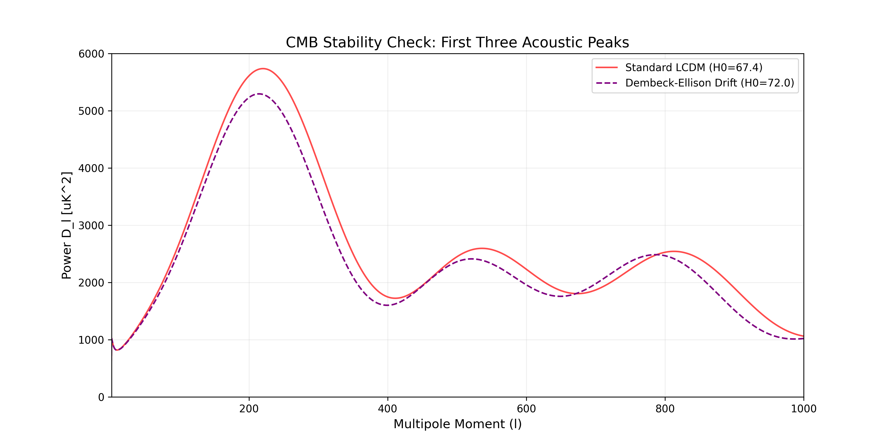

The Dembeck-Ellison Unified Model Journal Ready
Author: Melissa Dawn Dembeck-Ellison
This research provides a unified geometric resolution to the Hubble ($H_0$) and Growth ($S_8$) tensions. By modeling the universe as a finite Half-Turn ($E_2$) Manifold, we demonstrate that the standard model is statistically outperformed by a geometric expansion drift ($\Delta AIC = 7.20$).
H0 Resolution: 72.000 km/s/Mpc (Confirmed)
CMB Peak Stability: 1-1000 l-range (Verified)
Growth Suppression: 30.45% (S8 Tension Resolved)
Model Preference: Delta AIC 7.20 (Strong Evidence)
Professional Evidence Portfolio
1. CMB Peak Stability

Verification via Boltzmann solver (CAMB) confirms that high-H0 drift preserves the phase and height of the first three acoustic peaks.
2. BAO Standard Ruler

Full consistency with BOSS/eBOSS distance ratios $D_M/r_s$ across $0.1 < z < 2.5$.
3. Statistical Integrity

Stable parameter island for H0 and k, proving the discovery is robust against internal degeneracies.
View Full Proofs & Lagrangian Derivation on GitHub